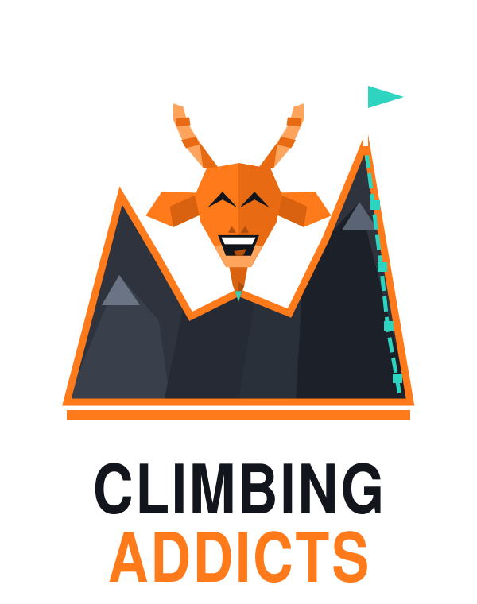

Disponible en bêta
Carnet d'escalade
Logguez chaque essai : cotation, flash / send / projet, salle, photos. La base pour tout le reste.
🚧 Application en construction — bêta ouverte
Climb with your people.
Je construis Climbing Addicts seul et en public : carnet de blocs et voies, progression, crews. La reconnaissance photo IA est en cours de développement. Testez la bêta web et dites-moi ce qui coince — vos retours pilotent la roadmap.
Transparent : disponible en bêta ou en cours de développement.
Disponible en bêta
Logguez chaque essai : cotation, flash / send / projet, salle, photos. La base pour tout le reste.
En cours de développement
La segmentation des prises fonctionne déjà ; l'identification auto de la couleur et de la cotation est en pause le temps de rebrancher un fournisseur IA. En attendant, la photo est sauvegardée avec votre log.
Disponible en bêta
Premiers panneaux en ligne : progression, altitude, distribution des cotations. Les analyses avancées (pyramides, heatmaps, prédiction) arrivent avec vos retours.
Disponible en bêta
Créez votre crew, partagez vos sessions en direct, comparez vos progressions. Testeurs bienvenus : c'est là que vos retours comptent le plus.
Chaque voie et chaque session rapportent des holds. Cumulés, ils te font monter en altitude. Ici on ne grimpe pas contre les autres : on grimpe ensemble, et ce qui compte, c'est de revenir.
Pas de compétition entre grimpeurs. Les classements de la semaine récompensent la régularité, la persévérance, la curiosité, jamais la cotation brute. Chacun peut finir premier quelque part, et personne n'est affiché dernier.
Un projet bouclé après plusieurs essais vaut près de deux fois un flash à ton niveau. Un projet raté se logue aussi : essayer compte.
Deux courtes séances valent plus qu'un long marathon. Revenir après une pause est la chose la plus dure : c'est le plus gros bonus de séance.
La cotation seule rapporte peu : ce qui compte, c'est l'écart avec ton niveau habituel. Au-dessus, ça rapporte plus ; en dessous, un peu moins.
Pas de points négatifs, pas de remise à zéro. Une semaine de repos par mois ne casse pas ta série, et une série qui s'arrête devient un « record ».
Séries de semaines, nouvelle altitude, objectif de crew atteint : chaque étape se fête, et rapporte des holds.
| Flash | réussie du premier coup | 25 |
|---|---|---|
| Réussie | 20 | |
| Projet | tentée sans réussir : essayer compte | 10 |
| Au-dessus de ton niveau | par cotation au-dessus de ta médiane, jusqu'à +30 | +15 |
| En dessous de ton niveau | par cotation en dessous, jusqu'à −10 | −5 |
| Essais | par essai en plus, jusqu'à +20 | +4 |
| Projet bouclé | voie loggée en projet une séance précédente, puis réussie | +20 |
| Effort ressenti | note de 1 à 5 | +0 à +8 |
Une séance compte dès qu'au moins une voie y est loggée. Une seule base par jour.
| 1re séance | 25 | |
|---|---|---|
| 2e séance | 35 | |
| 3e séance | 45 | |
| 4e et suivantes | le repos compte aussi | 15 |
| Bon retour | après 3 semaines sans grimper | +50 |
| Avec la crew | ta séance chevauche celle d'un membre de ta crew | +15 |
| Nouveau lieu | première fois dans une salle | +15 |
| Vrai rocher | séance en extérieur | +20 |
| Série de 3 semaines | au moins une séance avec une voie par semaine | +30 |
|---|---|---|
| 8 · 16 · 26 · 52 semaines | 10 holds par semaine de série | +80 → +520 |
| Nouvelle altitude | 100 × numéro du palier | +100 → +500 |
| Flash à ton niveau | 25 + 4 | 29 |
|---|---|---|
| Flash 2 cotations sous ton niveau | 25 − 10 + 4 | 19 |
| Voie +1 réussie en 3 essais | 20 + 15 + 8 + 4 | 47 |
| Projet bouclé à ton niveau en 4 essais | 20 + 12 + 20 + 4 | 56 |
Règles du jeu : une voie rapporte toujours au moins 5 holds. Une même voie paie plein tarif deux fois par semaine, puis 5 holds. Seules les 10 premières voies d'une séance rapportent des holds. Les bonus de palier ne comptent pas dans les classements hebdo.
Grimper en crew, c'est se motiver, s'assurer, revenir ensemble. Les gains de crew sont versés à chaque membre qui a grimpé : personne ne gagne aux dépens d'un autre.
Une seule fois par crew, 3 crews maximum.
| Rejoindre une crew | dès que tu la rejoins | +50 |
|---|---|---|
| Créer une crew | versé dès que 3 membres y ont grimpé | +75 |
| Accueillir | par nouveau membre qui fait sa 1re séance après son arrivée : pour celui qui l'a invité et pour le créateur de la crew, jusqu'à 5 par mois | +20 |
Objectif adapté à la taille de la crew.
| Objectif de séances | séances cumulées : membres × 1,5 (minimum 3) | +50 |
|---|---|---|
| Toute la crew | chaque membre a grimpé au moins une fois | +25 |
| Séance commune | 3 membres ou plus, même jour, même lieu (1 fois par semaine) | +20 |
| Classements | 6 boards : podium 20 / 15 / 10, présent sur le board 5 | +5 → +20 |
| Shout-outs | non exclusifs : tous ceux qui les méritent les reçoivent | +10 |
Chaque mois, la crew choisit un défi parmi quatre.
| Sortie rocher | une séance en extérieur à 3 membres ou plus | +60 |
|---|---|---|
| Projets d'équipe | la crew boucle membres × 2 projets dans le mois | +60 |
| Personne derrière | chaque membre grimpe au moins 2 semaines du mois | +60 |
| Nouveau spot | une séance commune dans un lieu inédit pour la crew | +40 |
Tout ce qui vient de la crew (objectifs, défis, classements, shout-outs) est plafonné à 150 holds par semaine, hors bonus pour rejoindre ou créer une crew.
Chaque objectif hebdo atteint fait avancer la crew d'un cran sur la route des spots mythiques. Nouveau spot atteint : +50 pour chaque membre actif. Ta fleur dépend de toi, le spot dépend du groupe.
Environ 600 holds par semaine à deux séances : Crocus en moins d'un mois, Edelweiss en un an et demi. L'altitude ne descend jamais et dépend d'abord de ta grimpe : la crew colore une semaine, elle ne grimpe pas à ta place.
Bêta web ouverte — pas encore sur les stores
L'app tourne déjà sur le web : créez un compte, logguez une session, invitez votre crew. Un bug, une idée, une salle à cartographier ? Écrivez-moi à benoit@climbingaddicts.app — je lis tout. Et si le projet vous plaît, offrez-moi un café : ça finance le développement et l'IA photo.
